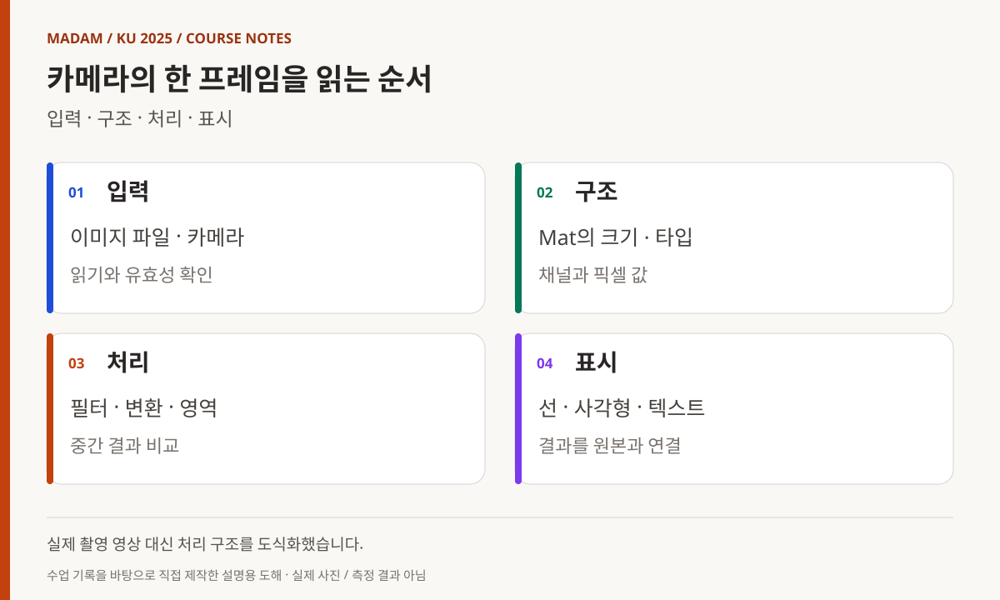
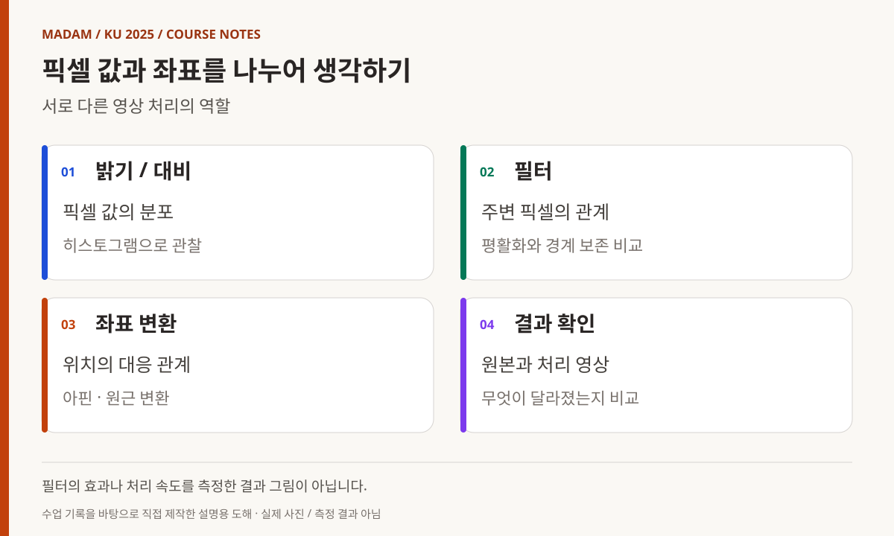
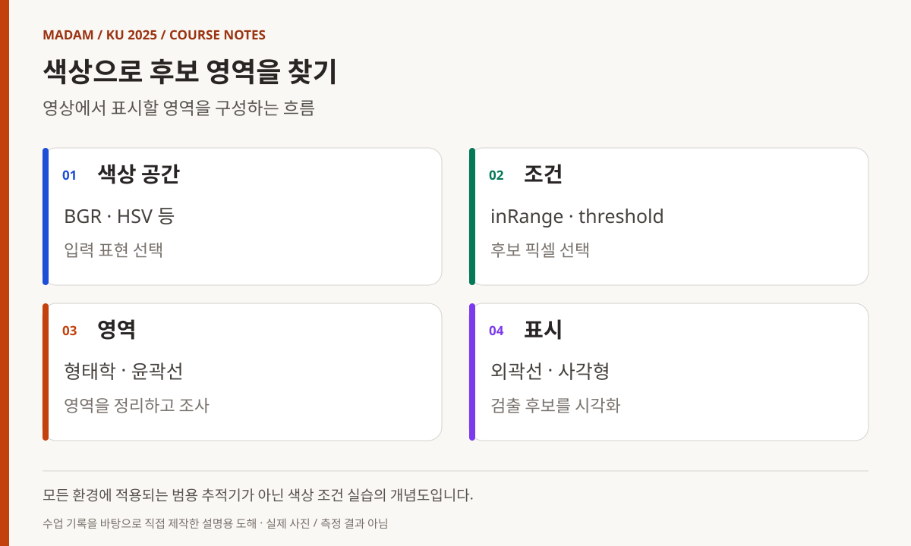
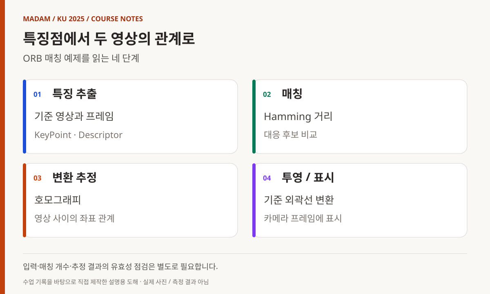

KOREA UNIVERSITY SEJONG / 2025 / SUBJECT 07
OpenCV,
픽셀에서
특징점까지
이미지의 구조를 읽고, 처리 단계를 연결하다.
카메라 입력·필터·좌표·검출과 매칭으로 이어진 5일.
빅데이터·IoT 소프트웨어 개발자 과정
OpenCV, 한 장의 이미지에서 카메라 속 특징을 찾기까지
OpenCV 과목은 C++로 다뤄 온 자료구조와 실행 흐름을 이미지에 적용하는 시간이었다. 파일을 열어 화면에 보여 주는 첫 프로그램에서 시작해 픽셀 값과 필터, 좌표 변환, 색상과 윤곽, 특징점 매칭까지 이어졌다. 장기 과정의 앞부분에서 배운 언어와 장치 입출력이 카메라 프레임이라는 새로운 데이터에서 만났다.
- 교육 기관
- 고려대학교 세종캠퍼스
- 이 글의 기간
- 2025.05.27–06.02
5일의 수업 기록 - 주요 학습 내용
- C++ · Mat · 필터 · 색상 · ORB
- 과정 전체와의 관계
- 2025년 3월–7월 15일 장기 과정 중
날짜별 근거가 있는 과목 수업 기록
MADAM 대표 활동 이전에 진행한 최수길의 교육 경험입니다. 과정 전반의 감독 경험을 바탕으로, 강사 수업 기록과 예제·계획서를 대조했습니다.

도해 내용 읽기
- 입력 — 이미지 파일 · 카메라 / 읽기와 유효성 확인
- 구조 — Mat의 크기 · 타입 / 채널과 픽셀 값
- 처리 — 필터 · 변환 · 영역 / 중간 결과 비교
- 표시 — 선 · 사각형 · 텍스트 / 결과를 원본과 연결
05.27
이미지를 배열과 타입으로 이해하기
첫날에는 OpenCV의 활용 분야와 환경 설정을 소개한 뒤 빛, 샘플링, 양자화와 이미지 입출력을 다뤘다. imread·imshow·namedWindow·waitKey를 사용하고, 이미지를 읽는 옵션과 JPEG 저장 옵션을 살폈다. 파일이 열렸다는 결과에 더해 어떤 형식과 채널로 읽었는지가 이후 처리에 영향을 준다는 점을 확인하는 단계였다. [1]
Point·Size·Rect·Scalar와 InputArray·OutputArray를 거쳐 Mat의 생성과 속성, at·ptr을 통한 데이터 접근, 복사와 할당을 다뤘다. 이미지의 rows·cols·channels·type을 읽는 것은 화면의 내용을 수치 데이터의 구조로 설명하는 출발점이다. Mat 연산 예제는 픽셀 자료와 C++ 객체의 연결을 확인할 수 있는 참조로 남아 있다. [2]
마지막에는 VideoCapture와 VideoWriter로 동영상 재생·저장을 살폈다. 한 장의 이미지를 다루는 코드가 반복되는 프레임 처리로 확장되는 지점이다. 정지 이미지에서 가능했던 작업도 영상에서는 읽기, 처리, 표시, 종료 조건을 반복 흐름 안에 배치해야 했다.
05.28
화면에서 조작하고 결과를 확인하기
둘째 날에는 영상 읽기 오류 처리와 release, 저장 코덱을 살펴본 뒤 선·원·사각형·타원을 그렸다. putText와 FreeType을 이용한 한글 출력 래퍼도 작성했다. 수업은 이미지를 입력받는 단계에서, 처리한 정보를 영상 위에 표시하는 단계로 나아갔다. [1]
마우스 콜백과 트랙바를 연결하면서 사람이 화면을 조작하면 처리 결과가 바뀌는 구조를 실습했다. 마우스로 선을 그리고 필터 값을 조절하는 예제는 입력 이벤트와 프레임 처리의 관계를 살펴보기에 적합하다. 이후 임계값을 바꿔 가며 결과를 비교하는 실습에도 이 도구를 다시 사용했다.
FileStorage로 XML·YAML 파일을 저장하고 웹캠을 설정한 뒤 카메라 영상 위에 사각형을 그렸다. 입력 장치, 프로그램의 상태, 표시 결과를 한 화면에서 확인하는 흐름이다. 웹캠 영상이나 얼굴 사진은 이 포스트에 옮기지 않고, 익명화가 필요한 장면 대신 수업 구조를 재구성한 도해를 사용했다.

도해 내용 읽기
- 밝기 / 대비 — 픽셀 값의 분포 / 히스토그램으로 관찰
- 필터 — 주변 픽셀의 관계 / 평활화와 경계 보존 비교
- 좌표 변환 — 위치의 대응 관계 / 아핀 · 원근 변환
- 결과 확인 — 원본과 처리 영상 / 무엇이 달라졌는지 비교
05.29 오전
밝기·대비·시간을 수치로 관찰하기
마스크 연산을 복습하고 TickMeter를 이용해 처리 시간을 다뤘다. 같은 처리를 적용해도 프레임마다 어느 정도 시간이 필요한지 관찰하는 맥락이다. 이 글에는 실제 측정 로그가 없으므로 특정 FPS나 실시간 성능 수치를 제시하지 않는다. [1]
밝기와 대비 조절, 히스토그램 스트레칭과 평활화, 히스토그램 그래프 작성이 이어졌다. 영상을 더 밝게 보이게 하는 조작을 단순한 화면 효과로 보지 않고 값의 분포가 어떻게 바뀌는지 살펴보는 단계였다. 픽셀 값의 범위와 자료형에 따른 결과도 함께 고려해야 했다.
이 흐름은 뒤의 이진화와 색상 추출로 이어진다. 같은 임계값을 사용해도 조명과 입력 영상의 분포가 달라지면 결과가 달라질 수 있기 때문이다. 밝기 조절과 히스토그램은 결과를 꾸미는 기능뿐 아니라 후속 처리의 입력 조건을 이해하는 도구였다.
05.29 오후
필터와 좌표 변환을 구분하기
오후에는 convolution의 원리와 filter2D, blur·GaussianBlur를 다뤘다. bilateralFilter와 medianBlur도 이어졌다. 이름이 서로 다른 필터를 차례로 실행하는 데서 끝내지 않고, 주변 픽셀의 정보를 이용해 어떤 결과를 만드는지 비교하는 흐름으로 구성됐다. [1][3]
같은 날 affineTransform·warpAffine, perspectiveTransform·warpPerspective를 이용한 카메라 예제도 작성했다. 필터가 값의 관계를 다루는 작업이라면 좌표 변환은 영상의 위치와 형태를 다시 대응시키는 작업이다. 두 종류의 처리를 구분하면 결과가 달라졌을 때 어느 단계의 설정을 확인해야 하는지도 나누어 볼 수 있다.
강사 예제에는 실습 당시의 파일 경로와 장치 설정이 들어 있다. 따라서 자료를 현재 환경에서 실행하려면 경로·입력 파일·카메라를 다시 설정해야 한다. 이 글은 예제를 현재 장치에서 재실행한 결과가 아니라 당시 교육 범위를 설명한다.

도해 내용 읽기
- 색상 공간 — BGR · HSV 등 / 입력 표현 선택
- 조건 — inRange · threshold / 후보 픽셀 선택
- 영역 — 형태학 · 윤곽선 / 영역을 정리하고 조사
- 표시 — 외곽선 · 사각형 / 검출 후보를 시각화
05.30
색상과 경계에서 물체의 영역을 찾기
넷째 날에는 Sobel과 Canny, 트랙바를 연결한 카메라 예제로 경계 검출을 다뤘다. HoughLines·HoughLinesP·HoughCircles를 통해 직선과 원을 찾는 처리도 살폈다. 화면에서 사람이 알아보는 형태를 어떤 픽셀 조건과 기하학적 표현으로 다룰지 배워 가는 과정이었다. [1]
색상 공간 변환, 채널 분리·결합, inRange에 이어 threshold·adaptiveThreshold를 실습했다. 침식·팽창과 열기·닫기 등 형태학 연산, 연결 성분과 윤곽선도 함께 다뤘다. 색이나 밝기로 후보 영역을 고르고 그 영역을 정리하고 표시하는 여러 단계가 연결됐다.
마지막에는 inRange를 이용해 색상 물체를 따라가는 사각형 예제를 작성했다. 강사 저장소의 40_follow_color_paper.cpp는 이 실습을 확인하는 자료다. 이를 모든 물체와 조명에서 동작하는 범용 추적기로 표현하지 않고, 색상 조건을 이용한 수업 예제로 구분한다. [4]
06.02
특징점을 매칭하고 다음 분석 단계로 넘어가기
마지막 날에는 Haar Cascade와 HOG, QR 코드와 ArUco를 소개·실습했다. 이어 Harris·FAST·GoodFeaturesToTrack, KeyPoint·Descriptor·DMatch를 살펴봤다. 이 도구들은 모두 영상을 다루지만 목적과 표현 방식이 같지는 않다. 검출 대상과 대응 관계를 어떤 정보로 설명할지 범위를 넓히는 시간이었다. [1]
ORB 특징점을 이용한 카메라 객체 추적 예제도 작성했다. 49_matching.cpp는 기준 영상과 현재 프레임의 특징을 추출하고 Hamming 거리 기반 매칭, 호모그래피, 외곽선 표시로 이어지는 구조다. 수업에서 다룬 자료형과 좌표 변환이 하나의 예제 안에 다시 연결된다. [5]
이 예제에는 매칭 개수와 입력 유효성 등을 추가 점검해야 하는 부분이 있어 안정성이 검증된 추적 시스템으로 제시하지 않는다. 수업은 선형 회귀 예제와 평가로 마무리됐다. 픽셀의 규칙을 직접 정하는 영상처리에서 데이터를 통해 관계를 추정하는 머신러닝으로 넘어가는 연결점이었다. [6]

도해 내용 읽기
- 특징 추출 — 기준 영상과 프레임 / KeyPoint · Descriptor
- 매칭 — Hamming 거리 / 대응 후보 비교
- 변환 추정 — 호모그래피 / 영상 사이의 좌표 관계
- 투영 / 표시 — 기준 외곽선 변환 / 카메라 프레임에 표시
수업 운영
결과 화면보다 처리 순서를 남기기
5일 동안 다룬 범위는 넓었지만 중심 흐름은 일관됐다. 데이터를 읽고 구조를 확인한 뒤 변환하고, 조건을 정해 후보를 추출하며, 결과를 영상 위에 표시했다. 화면에 사각형이 나타나는 최종 결과뿐 아니라 중간 단계의 입력과 출력을 읽는 습관이 다음 실습을 이해하는 기반이 됐다.
강의계획서의 일부 항목과 실제 날짜별 기록은 일치하지 않는다. 본문은 doc/opencv.md의 진행 기록을 우선했으며, 6월 5일의 pose·SAM 보충 내용은 뒤의 머신러닝 기간 기록에서 별도로 다룬다. 후속 딥러닝 과목의 YOLO 수업을 이번 5일의 성과로 합치지 않았다.
공개 참조는 강사의 수업 기록과 예제 코드다. 교육생을 식별할 수 있는 카메라 화면, 이름, 개인 저장소나 평가 자료를 본문에 싣지 않았다. 이미지 도해도 실제 검출 결과나 수업 촬영 사진으로 오인되지 않도록 설명용으로 표시한다.
참조 자료와 기록 범위
- 1. 날짜별 OpenCV 수업 기록 ↗
5월 27일–6월 2일의 실제 진행 내용. - 2. Mat 기본 연산 ↗
영상 데이터 구조와 연산을 다룬 예제. - 3. 카메라 필터 예제 ↗
프레임에 영상 필터를 적용하는 코드. - 4. 색상 물체 영역 표시 ↗
색상 조건을 이용한 수업 예제. - 5. ORB 특징점 매칭 ↗
기준 영상·카메라 프레임 대응과 외곽선 표시. - 6. 선형 관계의 회귀 예제 ↗
영상처리에서 데이터 학습으로 넘어가는 연결 실습.
공개 참조는 강사 저장소의 동일한 리비전(856a133)에 고정했습니다. 내부 대조 자료: OpenCV 영상처리 프로그래밍 강의계획서(2025.05.06 작성). 계획서와 다른 부분은 실제 수업 기록을 우선했습니다. 6월 5일 pose·SAM 보충과 딥러닝 기간의 YOLO는 이 과목의 5일에 포함하지 않았습니다.
교육생 이름·계정·얼굴·연락처·개인별 평가 및 제출물 링크는 수록하지 않았습니다. 강사 코드는 당시 실습의 참고 자료이며, 새로 실행하거나 성능·안정성을 검증한 결과가 아닙니다. 그림은 기록에 근거해 직접 제작한 설명용 도해입니다.